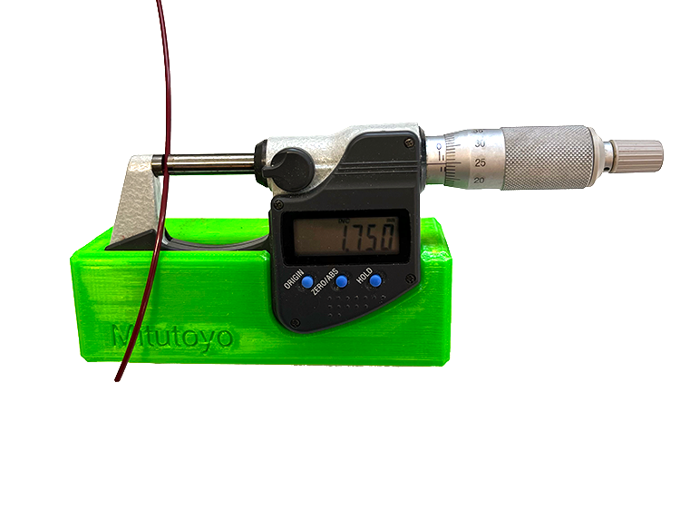
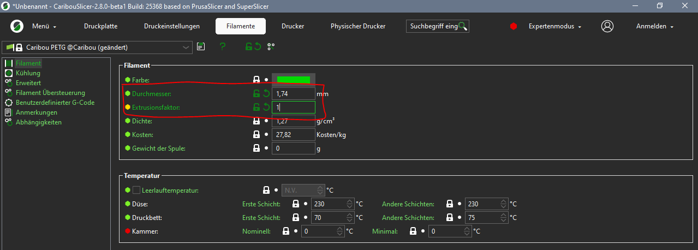
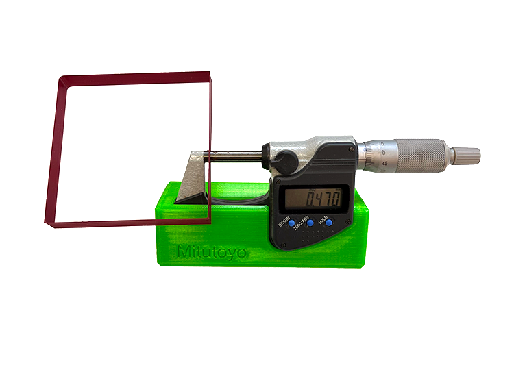
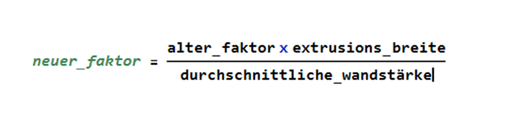
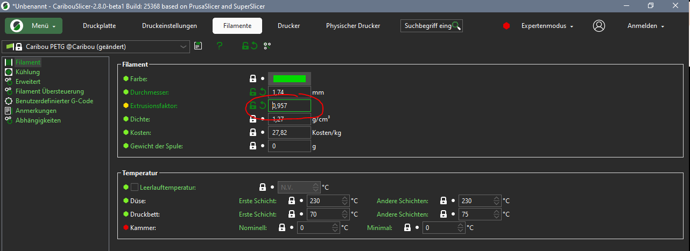

Für die folgenden Schritte empfehlen wir einen Mikrometer anstelle
eines Messschiebers.
Messschieber sind nicht präzise genug, um so kleine Werte zu messen,
und eine Messschraube
verfügt über ein Ratschensystem, mit dem bei allen Messungen der gleiche
Druck ausgeübt wird.
Wenn Sie dennoch einen Messschieber verwenden wollen, achten Sie darauf,
dass Sie immer den gleichen
Druck beim Messen und drücken Sie nicht zu stark.
Verfahrensweise
Messen Sie zunächst den Durchmesser des Fadens. messen Sie an mehreren
Stellen und berechnen Sie den Durchschnitt.
|  |
Geben Sie den Durchmesser im Slicer unter Filamenteinstellungen ein.
Vergewissern Sie sich, dass der Exrusionsmultiplikator bei der ersten Messungen
auf 1 eingestellt ist!
|  |
Jetzt können Sie den G-Code generieren (empfohlene Größe 80mm
oder 100mm) und drucken den G-Code drucken.
Messen Sie die Dicke aller Umfänge und berechnen Sie den Durchschnitt.
Am zuverlässigsten ist die Messung in der Mitte jeder Wand, wie in der
Abbildung.
|  |
Berechnen Sie den neuen Extrusionsfaktor, wie in diesem Beispiel:
|  |
- Ihr ursprünglicher Extrusionsmultiplikator = 1,00 und Ihre durchschnittliche
Umfangs
Dicke = 0,47 mm.
- Sie verwenden eine 0,4 mm-Düse, also beträgt Ihre angestrebte / erwartete
Extrusionsbreite 0,45 mm beträgt.
- Your new extrusion multiplier = (1.00 x 0.45) / 0.47 = 0.957
Ihr neuer Extrusionsfaktor= (1,00 - 0,45)/0,47 = 0,957
|  |
Slicen und drucken Sie das Kalibrierungsmodell erneut mit dem neuen
Extrusionsfaktor
Wert. Überprüfen Sie die Wandstärke mit Ihrem Mikrometer. Wiederholen Sie die
vorherigen Schritte wenn eine Verfeinerung erforderlich ist.
Anmerkungen
Der Extrusionsmultiplikator ist im Allgemeinen für eine ganze Spule konstant
(wenn Sie die Temperatur nicht ändern), aber der Filamentdurchmesser ändert sich.
Messen Sie daher vor dem Schneiden eines Teils den Filamentdurchmesser, den Sie
Filamentdurchmesser, den Sie verwenden wollen, und geben ihn in den Slicer ein.
Basiert auf dem Verfahren von
Grégoire Saunier .